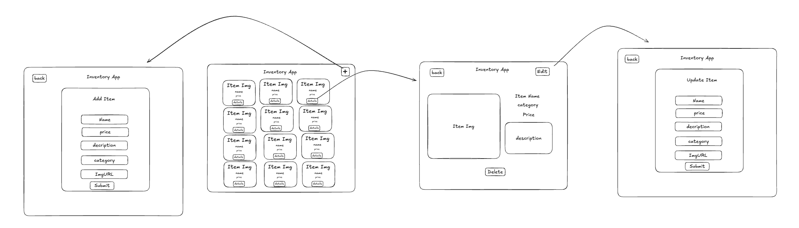
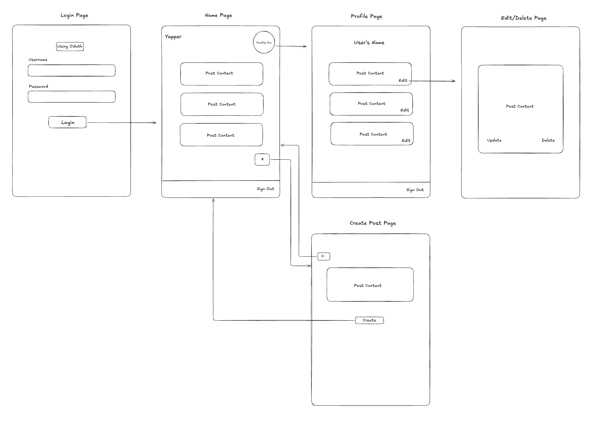

Inventory Application
A full-stack web application that interacts with a RESTful API to manage and display product inventory. Users can browse the full product list, view detailed information for individual items, add new products, or update existing ones using intuitive forms. The app also supports searching by item name or category for quick and efficient navigation..
- Features: Fetch, add, update, and delete inventory items
- Contribution: Built UI components and API integration
- Tech Stack: React, Node, Express, Sequelize, Jest
- Takeaways: Learned how CRUD applications are structured

Wireframe of the Inventory Application interface.
Final Bootcamp Project
An AI Issue Categorizer Slackbot built with Python to streamline feedback. Leveraging OpenAI's GPT API, it automatically classifies incoming issues, centralizing them in a dedicated channel. The bot also provides visual and numerical metrics for trend analysis.
- Features:
- Monitors Designated Channel 🔍: Automatically tracks messages in specific Slack channel for issue detection.
- AI-Powered Issue Classifier 🧠: Automatically classifies incoming issues using OpenAI.
- Centralized Issue Routing 💬: Forwards categorized issues to a dedicated Slack channel.
- Visual & Numerical Metrics 📊: Provides on-demand insights with text counts and a dynamic pie chart via slash command.
- Tech Stack Python, Slack API, OpenAI API
- Skills:Agile Methodology, Prompt Engineering, OpenAI API Integration
- Takeaways: Learned how to implement a real-time Slackbot, integrating OpenAI for analysis and a slash command to display the metrics in a pie chart to effectively visualize the data gathered.
View Repository
Back End Module Project
A robust RESTful API built with Python and FastAPI utilizing SQLite to provide full CRUD funcitonality and data persistence for the Yapper application's post management system.
- Features: Fetch, add, update, and delete inventory items
- Contribution: Architected the relational database schema by establishing SQL models for Users and Posts, seeded the database with comprehensive sample data, and engineered RESTful CRUD routes to facilitate fetching all posts, retrieving specific records by ID, and creating new content.
- Tech Stack: Python, FastAPI, SQLModel, SQLite, Auth0, Render
- Takeaways: Learned how CRUD routes are created using Python and FastAPI
Front End Module Project
A dynamic, interactive frontend for the Yapper application that enables secure user authentication via Auth0 and provides a seamless environment for performing CRUD operations on posts.
- Features: Full CRUD functionality for posts
- Contribution: Architected the home page to dynamically display user posts, implemented full update and delete functionality with seeded database support, and authored Jest tests while configuring backend middleware to resolve CORS issues for seamless frontend-to-API communication.
- Tech Stack: React, Tailwind CSS, Python, FastAPI, SQLite, Jest, Pytest, Auth0, Render
- Takeaways: Delivered a seamless user experience by combining secure Auth0 authentication with an intuituve interface for real-time content management.

Wireframe of the Yapper Application interface.
Deployment Module Project
A robust deployment infrastructure for the Yapper application featuring CI/CD pipeline built with Docker and GitHubb Actions that enforces automated testing to ensure code integrity before merging to main.
- Features: Pytest automated testing suite and a fully integrated CI/CD pipeline
- Contribution: Engineered a robust backend testing suite using Pytest, established a GitHub Actions CI/CD pipeline for automated deployment, and configured a Docker volume to ensure persistent data storage across container lifecycles.
- Tech Stack: Python, FastAPI, Pytest, SQLite, Auth0, Docker, GitHub Actions, Render
- Takeaways: Optimized the development lifecycle by establishing automated quality gates and containerized consistency across all environments.